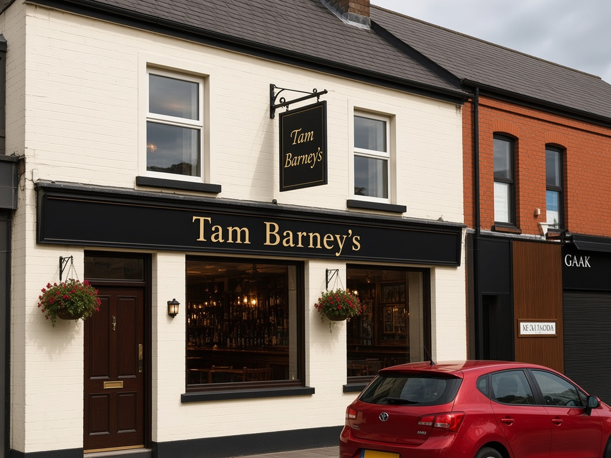
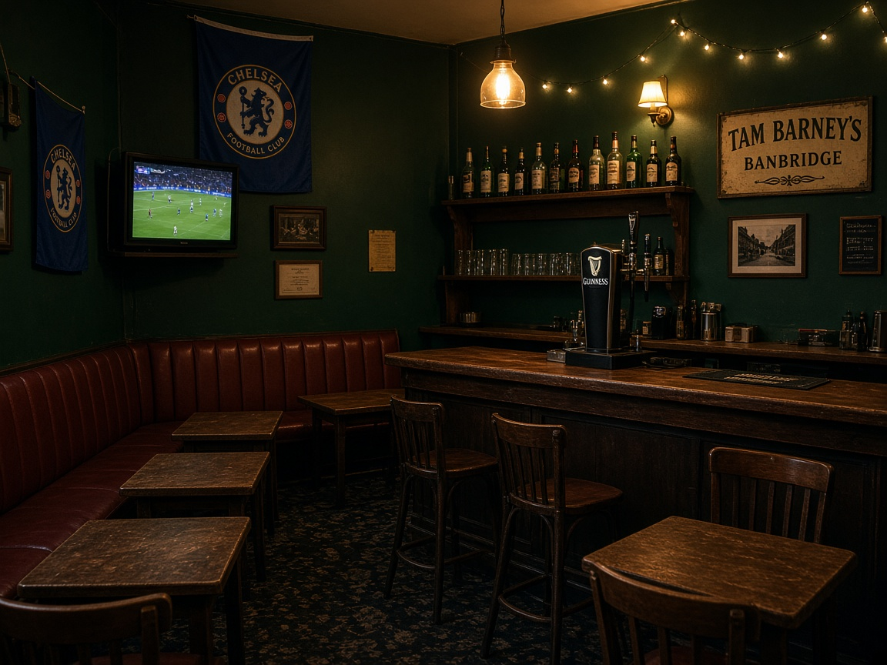
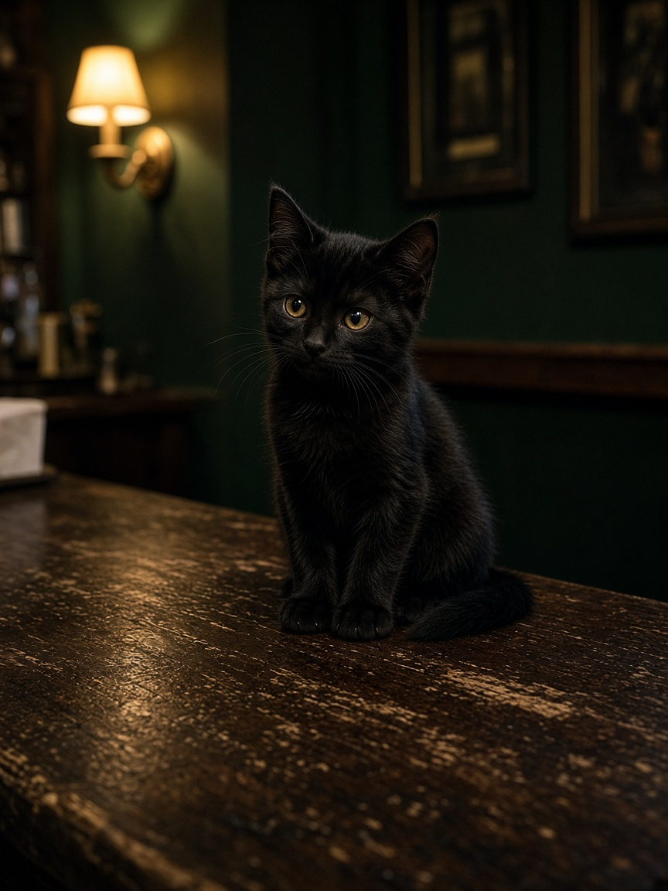
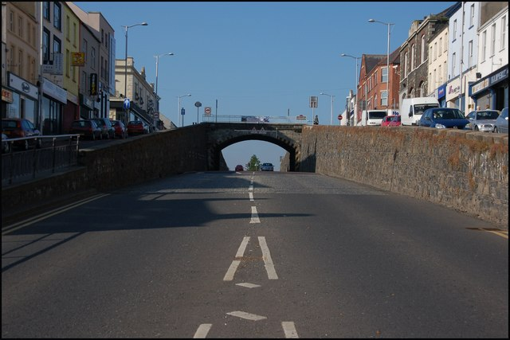
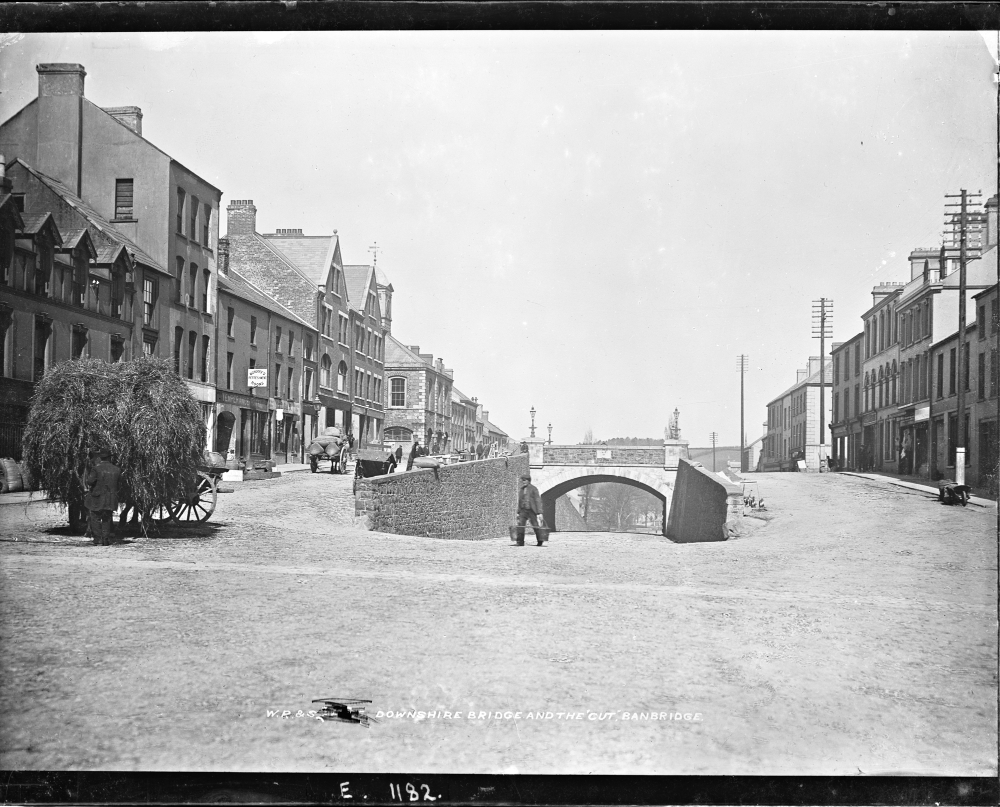

Pints first
A working bar, not a concept. Draught, bottles, and the usual suspects on the back shelf.
Checking hours
028 4066 2654Newry Street · Banbridge · County Down
A Banbridge local on Newry Street.
A family-run Banbridge local. Soft light, screens for the match, and a house that still feels like a house. If you can find the door, you will be looked after.
The house
Tam Barney's is the door at number 75, just along from The Cut. A family-run Banbridge house with regulars at the bar and staff who know the room.
It is a family-owned house with regulars at the bar and staff who know the room. Visitors who found it once tend to come back. The reviews talk about the same things Banbridge people already know: down-to-earth service, a relaxed atmosphere, and no fuss.
This is not a dining room with a printed tasting menu. Come for a pint, a packet of Tayto, the match, and a bit of craic. That is the point of the place.

A working bar, not a concept. Draught, bottles, and the usual suspects on the back shelf.
TNT Sports in the house. If there is a match on, the room will know about it.
Regulars, first-timers, and people who only found it because a local pointed them to the door.
What's on
There is no silver-service food offering here. If you are hungry, there are crisps and nuts on the bar. If you want to know what is happening this weekend, Facebook is the noticeboard.

A Banbridge story
For years there were whispers that Tam Barney's might be haunted. Then the CCTV started going off after closing. Bins moved. Lunchboxes hit the floor. Hand wash ended up in the sink. The house began to wonder if the stories were true.
The burglar was a jet-black kitten, stranded inside and only coming out when the last pint was pulled. The regulars named him Tam. Operation Save Tam followed — RSPCA, Cats Protection, the council, and finally local cat hero Susan McKeown, who got the wee thing safely caught.
“Tam Barney's first lock-in. No drink bought. No rent paid. Caused absolute havoc after hours. And still managed to become a local celebrity.”


Banbridge
Banbridge grew as a linen town on the road between Dublin and Belfast. In 1834 the main street was so steep that mail coaches struggled with the climb, so a cutting was driven through the middle of it. Everyone still calls it The Cut.
Tam Barney's sits on Newry Street, a short walk from that underpass and the old Jinglers Bridge. Come in after a walk through town, a look at the street art, or a day at the Game of Thrones Studio Tour out at the linen mill.

Find us
County Down, BT32 3EA. Ring ahead if you are coming from away, and check Facebook on holidays — hours can move.
Usual hours from recent listings. Always worth a quick look at the Facebook page before you travel.
What people say
4.6
★★★★★
Google rating from dozens of Banbridge reviews. Facebook listings sit at a clean five.
“A little hidden gem. Down-to-earth staff and regulars. A proper pub, proper welcoming people. Family owned.”
Gary Boardman, Google review“The warm atmosphere of this bar makes visitors feel relaxed. Competent staff, year-round.”
Summarised from recent listings